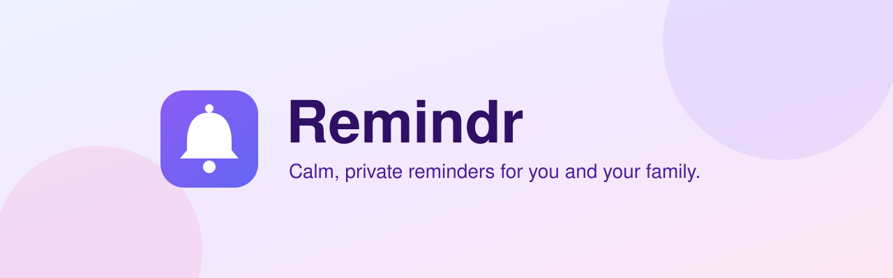
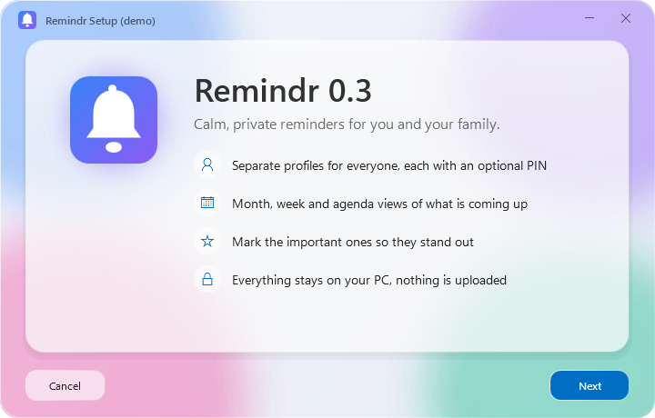

Calm, private reminders for you and your family
A reminders and calendar app for Windows, built for the whole family. Everyone gets their own profile, reminders get a picture, it speaks 32 languages, and your data never leaves your PC.
v0.3.1 · Windows 10 (2004+) and 11 · ~94 MB
What's new in 0.3.1: faster start-up, lower memory.
What it does
A profile for everyone
Each person picks a name, a color and one of 176 pictures, and can lock their profile with a 4-digit PIN.
Month, Week and Agenda
Colored dots show what's on each day. Click a day to see it, or double-click to add a reminder.
Reminders with pictures
120 pictures across School, Work, Health, Home, Food, Money, Travel, Celebrations and Sports.
Important badge
Important reminders stand out with a red badge.
A warm welcome
The first launch greets you in many languages, then sets you up in five short steps.
32 languages
Switched live without a restart, with full right-to-left layout for Arabic and Hebrew.
Light, Dark or System
Remind UI's frosted glass and slowly drifting colors, in the theme you choose.
Stays up to date
Checks GitHub for new releases at startup and verifies every download before installing it.
Report a bug
Straight from Settings > Help & feedback.
Screenshots



Install
- Download Remindr-Installer.exe.
- Run it and follow the installer. It installs just for your Windows account, so no admin prompt is needed.
- Launch Remindr from the Start menu.
Verify your download (optional)
Compare the result with Remindr-Installer.exe.sha256 on the latest release.
Get-FileHash .\Remindr-Installer.exe -Algorithm SHA256Uninstall from Settings > Apps > Installed apps. Your reminders are kept unless you tick Also remove my data, and even then they go to the Recycle Bin.
Privacy
- Your data lives locally in
%AppData%\Remindr. - No account, no cloud, no tracking.
- The only network request is the optional update check, which asks GitHub's public API for the latest version number and sends nothing about you. You can turn it off in Settings.
- Profile PINs are hashed (PBKDF2). A 4-digit PIN is a privacy screen for family members, not strong security.
System requirements
- Windows 10 (version 2004 or later) or Windows 11, 64-bit
- About 94 MB download
- No separate .NET install needed
Coming next
- Notifications, with snooze
- Tray icon
- Start with Windows
- Recurring reminders
- Search
- Offline AI assistant